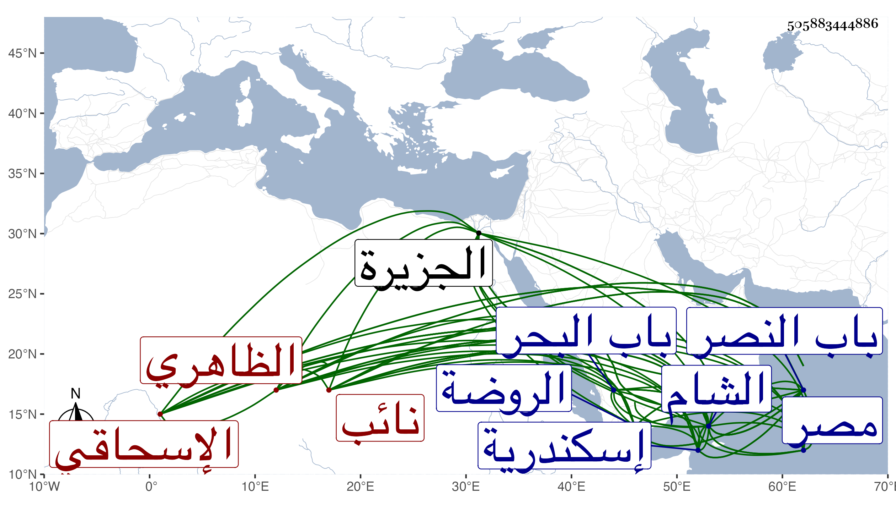

0902Sakhawi.DawLamic.ITO20230111-ara1.EIS1600.505883444886
Biography ID: 505883444886
706
قجماس الإسحاقي الظاهري جقمق نائب الشام . نشأ في خدمة أستاذه وجود الخط في طبقته بحيث كتب بردة وقدمها له فاتهم بأنها خط شيخه وكان كذلك فامتحنه فكتب بحضرته بسملة فاستحسنها سيما وقد أشبهت كتابة شيخه فيها وصرف له أشياء وحج رفيقا لتمربغا أظن في أيام أستاذهما ثم عمله الظاهر خشقدم خازندار كيس ثم أمره بلباي عشرة بعد أن توجه لنقل المنصور لدمياط للإذن للمؤيد بالركوب فلما استقر الأشرف قايتباي رقاه وأسكنه في بيته بالباطلية ثم أرسله الشام لتركه نائبها بردبك البشمقدار ودواداره أبي بكر ثم استقر به في نيابة إسكندرية وأضاف إليه وهو بها تقدمة ثم نقله من النيابة لإمرة آخور وتحول إلى الديار المصرية فسكن ببيت تمر الحاجب بالقصر تجاه الكاملية ثم تحول لبيت الدوادار الكبير بالقرب من الحسنية والألجيهية ، وسافر في أثنائها أمير الحاج وكان معه من الفقهاء الصلاح الطرابلسي والشمس النوبي وكذا توجه في أثنائها لعمارة برج السلطان بها بل وعمر لنفسه حين نيابته بها جامعا ظاهر باب إسكندرية المسمى بباب رشيد للجمعة والجماعات مع تربة وخان بقربه كان السبب فيه عدم أمن من يبيت من المسافرين ممن يصل إلى الباب بعد الغروب وغلقه وحصل به نفع كبير ودفن بتربة الظاهر تمربغا وأنشأ بجانب ذلك بستانا هائلا ، وجدد أيضا جامع الصواري ظاهر باب السدرة وأقيمت به الشعائر وعمر خارجها بالجزيرة خارج باب البحر على شاطئ بحر السلسلة هيئة رباط وأودع به أسيلة ونحوها وبنى وهو أمير آخور مدرسة هائلة بالقرب من خوخة أيدغمش للجمعة والجماعات وجعل بها متصدرا وقارئا للبخاري ونحو ذلك بل نقل ما كان قرره من التصوف بجامع الأزهر إليها ، وعمل تربة بالقرب من تربة قانم التاجر وبها أيضا تصوف ووظائف وكذا جدد بالقرب من الروضة في نواحي باب النصر مكانا يعرف بالشيخ موسى وغير ذلك وأرصد لكلها أوقافا ، ثم نقل إلى نيابة الشام بعد أسر قانصوه اليحياوي في المجردين وظهر صدق منامه الماضي في الأشرف قريبا ، وجدد بجوار باب السعادة داخل باب النصر منها مدرسة وقرر فيها صوفية بل عمل بجانبها مطبخا للدشيشة وسافر لعدة غزوات . ومات في آخر يوم الخميس ثاني شوال سنة اثنتين وتسعين وصلى عليه من الغد ودفن بتربة وجاء الخبر بذلك في ثامنه ، ولم يخلف ولدا وإنما ترك زوجته ومن شاء الله وتعرض الملك لسائر جماعته حتى العماد العباسي ، واستقر بعده في النيابة قانصوه عودا على بدء ، وكان ساكنا خيرا من خيار أبناء جنسه متثبتا متواضعا متأدبا مع العلماء والصالحين شجاعا بحيث كانت له اليد البيضاء في كسر عسكر ابن عثمان رحمه الله وعفا عنه .
